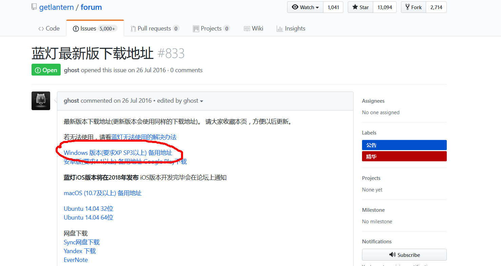
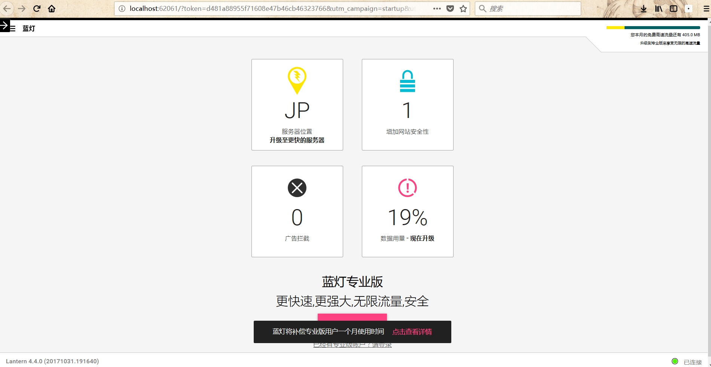
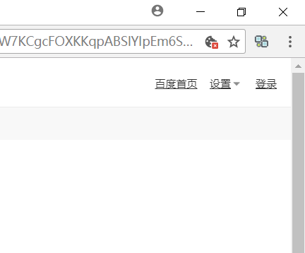
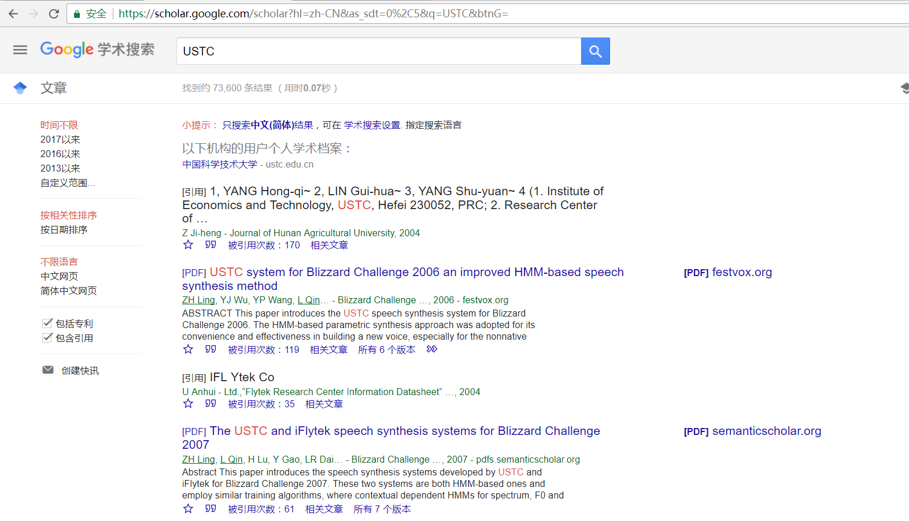
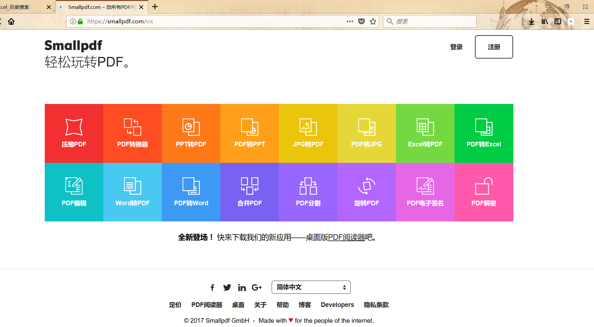

快 （ 过年 ） 放假了，有不少同学寒假要开始准备论文的事情，在此给咱们班的同学推荐几款你办公查资料一定用得上的东西
- 翻墙的梯子(最快且免费)
- 信息管理插件(随时随地将看到的资料存档)
- pdf转docx、xls等office格式的神器
开始一一介绍
翻墙的梯子
什么是翻墙的梯子？如果你还不太明白，一句话解释：一个可以让你上GOOGLE、Facebook、twitter等网站的东西。在学术道路上，不可避免要用Google或者Google学术查资料，目前主流的方法是这么几个。 Goagent \ XXnet \ VPN. 要么花钱，要么配置复杂。今天介绍的两种方法一是免费，二是极速，什么也不用配置，打开就能上。
Lantern
登陆网址 Lantern开发组的GitHub站点
Windows用户下载相应版本

好吧，送佛送到西，软件地址在这里， 点击下载
一路点确定，安装完成
如何翻墙？
双击蓝灯的快捷方式，蓝灯会在你的任务栏出现一个小小的图标
与此同时，你的电脑应该会自动打开一个网页，或者尝试打开一个网页，选择用浏览器打开，放行它，此时你可以看到这样一个页面

翻墙成功(就是这么简单！)
欢迎来到墙的外面(下图是我的twitter主页)
Monero Proxy For GOOGLE
虽然蓝灯大法好，但是蓝灯有一个缺点，免费版的每个月只有500MB流量，无限流量需要付费。所以在此再推荐一款 谷歌Chrome浏览器的插件 Monero Proxy For GOOGLE
它的安装方法同样非常非常简单， 点此下载插件
打开你的Chrome浏览器的 更多工具 -> 扩展程序 页面，将插件拖进该页面，浏览器会自动识别并安装完成。
如果你还没有下载chrome浏览器，下载一个吧，Chrome和Firefox浏览器总要有一个，浏览器最大的魅力永远是那无穷无尽的免费插件，这就是火狐与谷歌备受推崇的原因。
这个时候回到你的chrome主页，你发现右上角多了一个符号

点一下它，然后访问谷歌学术

使用该插件，可以自由访问谷歌学术不限制流量，但是它的缺点是————只能访问谷歌学术。
信息管理软件
届于时间原因(我要睡觉了。。。)，简短介绍一下这个神器的插件————方片收集
这是一款在各个主流浏览器上都有发布的插件，我在Firefox上使用，体验极好。它的用处在于，当你在浏览网页的过程中遇到想摘引或者存档的内容，就可以将选中内容一键存份，无论是文字、图片、视频还是其它，并且插件会自动帮你归档好，贴心地标注信息来源网页，方便你回调查看。
详细的教程你可以参见官方手册 点这里
pdf转docx、xls等office格式的神器
如果你曾经有 将pdf格式的文件转为word或excel的经历，相信你看到这个网站会热泪盈眶
它是一个在线网站，可以提供将pdf转为office系列的服务，其速度、质量都是我见过的最快最好的。

可惜的是，它对每一个浏览器限制每小时3次，所以如果你有批量转换的需求会很难办
怎么可能难办，这个教程帮你搞定它。
事实上这个网站控制访问次数的方法是将信息写入浏览器cookie，所以你可以选择对该网站禁用cookie，或者每使用三次，在后台清除该站点cookie，就获得了无限次使用权。
笔者有一次一次性转了两百多个pdf文件，就是使用该方法。
最后：不要相信网上的pdf转换器，我都帮你下载下来试过一遍了，没一个有这个网站的效果好。
祝大家用得开心！